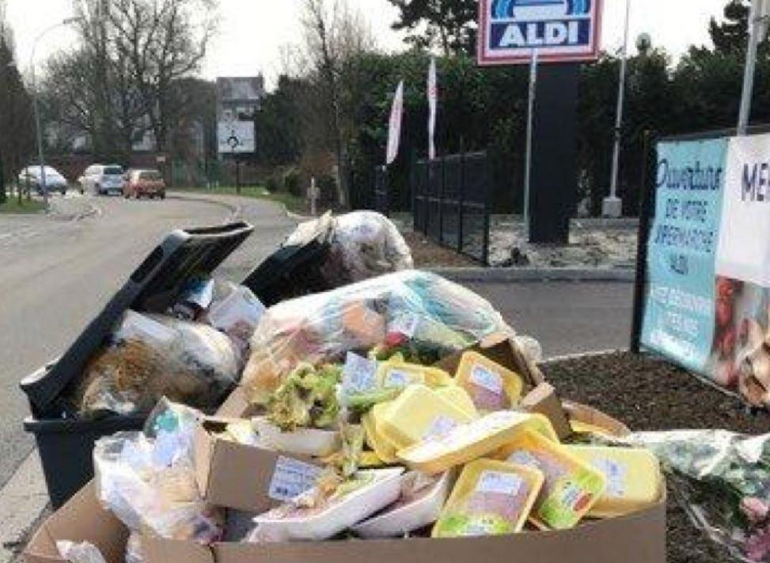
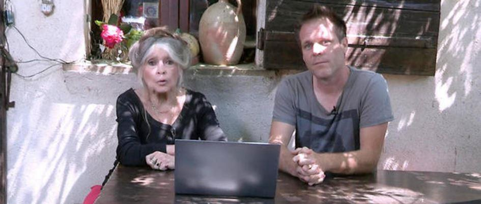
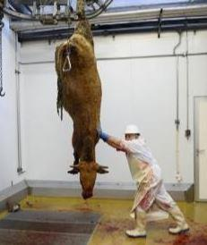
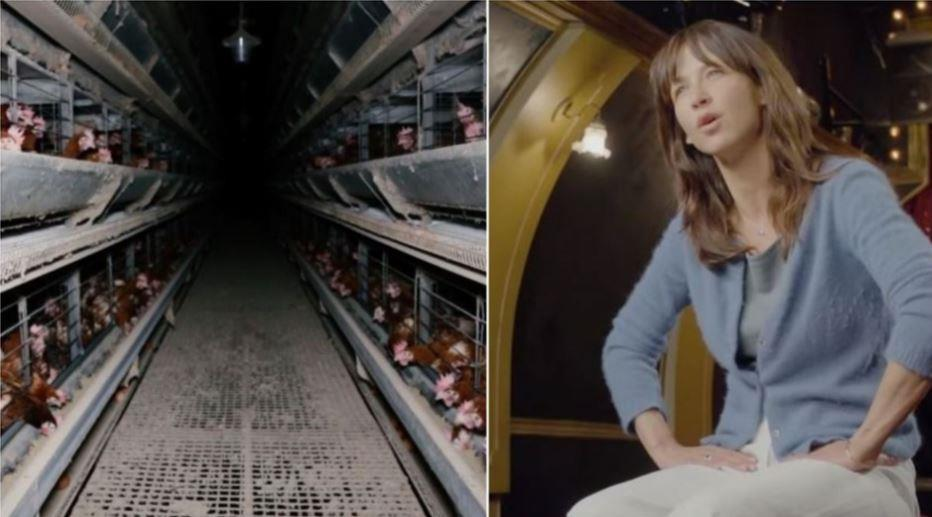
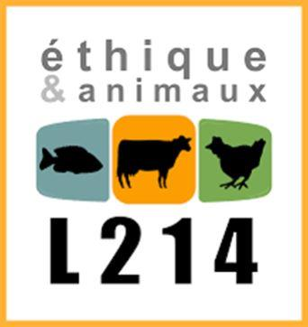

Ne soyons pas les complices de l’horreur des abattoirs.
Des personnalités se mobilisent contre la loi agriculture et alimentation
A l’heure où aucune suite n’a été donnée au rapport sur les abattoirs et la maltraitance des animaux voués à la mort pour remplir nos assiettes, notre complicité est insupportable car le sujet est à la fois une question morale pour notre société mais aussi nous met en défaut sur nos valeurs humaines et républicaines.
Nous sommes un pays qui défend les droits de l’homme (abolition de l’esclavage, statut inférieur des femmes…), plein de contradictions. En effet, comment pouvons-nous ne pas défendre les droits des animaux ? Maltraités par nos cultures, nos croyances valables aussi bien pour les musulmans que pour les chrétiens (les agneaux de Pâques en sont un exemple !), nos habitudes alimentaires ou encore la force commerciale des lobbies de l’industrie agroalimentaire.
Complices, nous nous taisons… et laissons faire alors que nous savons et nous pouvons changer les choses. Nous cosignons la maltraitance avec les industriels du carnage. Nous nous rendons coupables de la souffrance d’êtres que nous aimons. Nous laissons tuer sans en avoir toujours la nécessité. Nous sommes responsables des quantités de viandes jetées chaque jour dans la grande distribution !
L’horreur des abattoirs n’est pas acceptable ! Ce sont 3 millions d’animaux, ovins et bovins qui sont mis à mort avec effroi et cruauté, et ce, sans compter les produits de la pêche et tous les animaux marins tués par la même occasion.
Imaginons nos animaux de compagnie, tués comme dans les abattoirs ! Nos chiens, nos chats, nos lapins, nos oiseaux, égorgés par le couteau du « hallal » ou l’électricité comme il est aujourd’hui d’actualité. Les méthodes aussi cruelles les unes que les autres ne manquent pas.
Y-a-t-il des manières de tuer plus « douces » ? Non c’est notre mode de consommation qui est en cause. Il est possible de faire autrement. Il est un défi auquel le lecteur pourra se livrer : combien d’animaux sur terre ont-ils la paix, autrement dit, que nous ne mangeons pas ?
De surcroît, Stéphane Travert, Ministre de l’agriculture présente son projet de loi agriculture et alimentation, qui n’ira pas dans le sens des défenseurs des animaux. L’un des volets est consacré au « bien-être animal ». On croit rêver dans cet environnement de guerre des prix et de lobbying en tout genre !
C’est ainsi que des grincements de dents se sont fait entendre et que quelques personnalités associées au mouvement L214, ont réagi fortement. Parmi ces personnalités Sophie Marceau, Rémi Gaillard ou encore notre égérie bien-aimée Brigitte Bardot (1). Tous ont interpellés le gouvernement et certains députés sur l’urgence à agir.
Brigitte Bardot veut toucher « un maximum de gens, pour leur demander de faire attention à ce qu'ils mangent quand ils mangent un bifteck ou une côte de porc ».
Pour le moment « Macron ne fait rien » fustige Brigitte Bardot effondrée en visionnant de nouvelles images de l’abattoir d’Alès dans le Gard (déjà épinglé en 2015 !), tournées en caméra cachée : « des vaches vivantes suspendues par la patte, un cochon frappé quand il tente de fuir...Il y a un petit veau qui vomit le lait qu'il a tété de sa mère ! ».
« Si les abattoirs avaient des fenêtres, les gens seraient végétariens » dit Rémi Gaillard convaincu que la jeune génération est plus sensible à la protection animale. Mais est-ce vraiment la réalité ?
Emmanuel Macron se fait en effet complice des chasses à courre ou des lobbies hallal. Encore un mensonge de campagne !
David Cormand, d’Europe Ecologie Les Verts estime que la France s’évertue « à soutenir une agriculture archaïque qui dépend de la chimie, du pétrole et de l’exploitation animale ».
Le ministre Stéphane Travert n’a pas accédé aux demandes des personnalités ni même à celle du mouvement L214 malgré une vidéo poignante et insoutenable d’un élevage de poules en cages et malgré une porte-parole de renom en la personne de Sophie Marceau. Et pourtant 90 % des français souhaitent des mesures. Le gouvernement est sourd. Aucune proposition avant 2022 ne verra le jour, sauf peut-être une promesse (encore une de plus !) d’interdiction de vendre des œufs pondus par des poules élevées en batterie. Mais, ne nous laissons pas endormir car l’élevage de ce type ne sera pas supprimé pour autant et ne concernera pas « les produits transformés à base d’œufs ».
Selon le Ministre, il n’est pas possible de faire autrement.
Cette réponse et cette loi inquiète car le contrôle vidéo dans les abattoirs avait été adopté par l’assemblée nationale en 2017 puis enterrée par la commission des affaires économiques en avril 2018. Seuls les abattoirs qui le veulent pourront se doter d’un système de vidéosurveillance. Un arbitrage pour le moins qui en dit long sur l’éthique et la morale de l’individu et de la société !
Nous devons rendre justice aux animaux et protéger ce qui est précieux à notre existence même : le respect de nos valeurs et le changement de nos modes de consommation. Ceci est valable aussi lorsque nous parlons du facteur 4 pour le réchauffement climatique (il faudrait 4 planètes pour faire vivre la population mondiale).
L214 se mobilise pour la fermeture des abattoirs (2) et organise en Juin 2018, deux marches en France et dix-neuf marches en Europe.
Pour la France, ce sera le 2 juin à 13h, à Toulouse, face au musée « Les abattoirs ». Puis Paris, le 23 juin, à 12h place de la République. Le cortège (calme et pacifique) accueillera tous ceux qui veulent que les choses changent, que les mentalités évoluent que d’autres modes de consommations (comme le végan) se développent.
Beaucoup d’autres villes se mobilisent aussi (1). Au total, ce sont 36 marches dans des pays européens (Allemagne, Belgique, Espagne, Finlande, Irlande, Italie, Pays-Bas, Royaume-Uni…) mais aussi dans le monde (Japon, Etats-Unis, Turquie, Canada, Australie).
Le projet de loi, à défaut, se contente d’une mesure coercitive, « la création d'un nouveau délit visant à réprimer les mauvais traitements envers les animaux commis dans les transports et les abattoirs, et l'accroissement des sanctions en les portant à un an d'emprisonnement et à 15.000 euros d'amende, soit un doublement par rapport au droit existant ». Une autre mesure pour les associations de défense des animaux est prévue : la possibilité leur sera donnée de se porter partie civile dans un procès.
La loi agriculture et alimentation ne fait que porter le drapeau de cette « vieille France » obsolète refusant le développement d’une agriculture d’avenir. Peut-être que d’autres pays du monde, comme la Russie, comprendront le message. Seules les traditions paysannes qui respectent les sols et les animaux pourront développer des produits de qualité répondant aux besoins des consommateurs de bio et végan, segment de marché qui ne fera que croître dans les chiffres de l’économie de l’avenir.
Marchons pour que nos animaux ne soient pas les grands oubliés.
Partager cette page